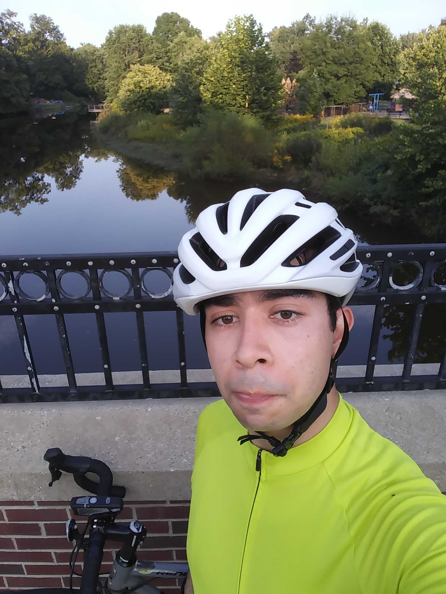
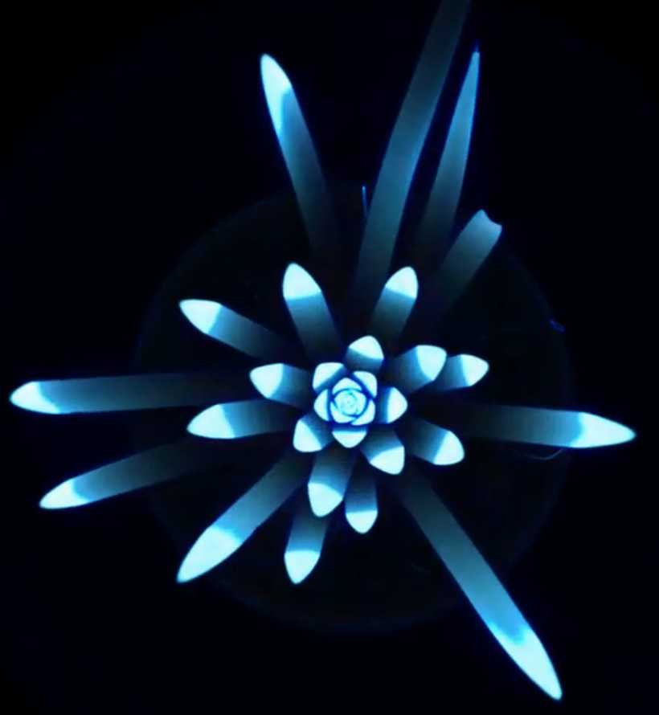
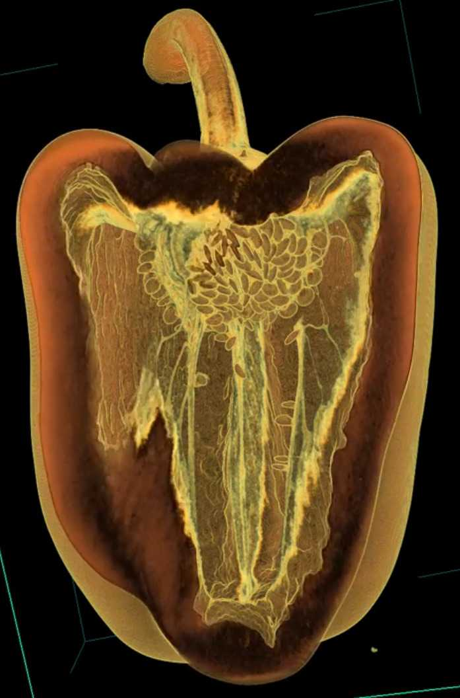
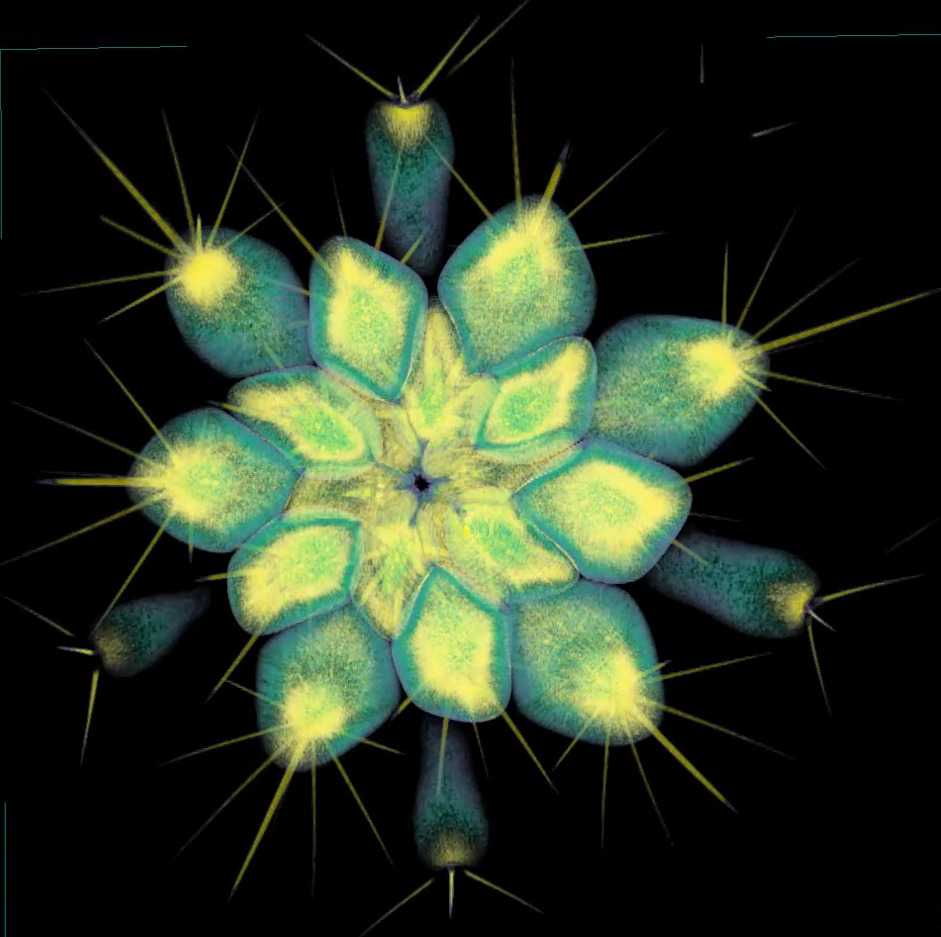
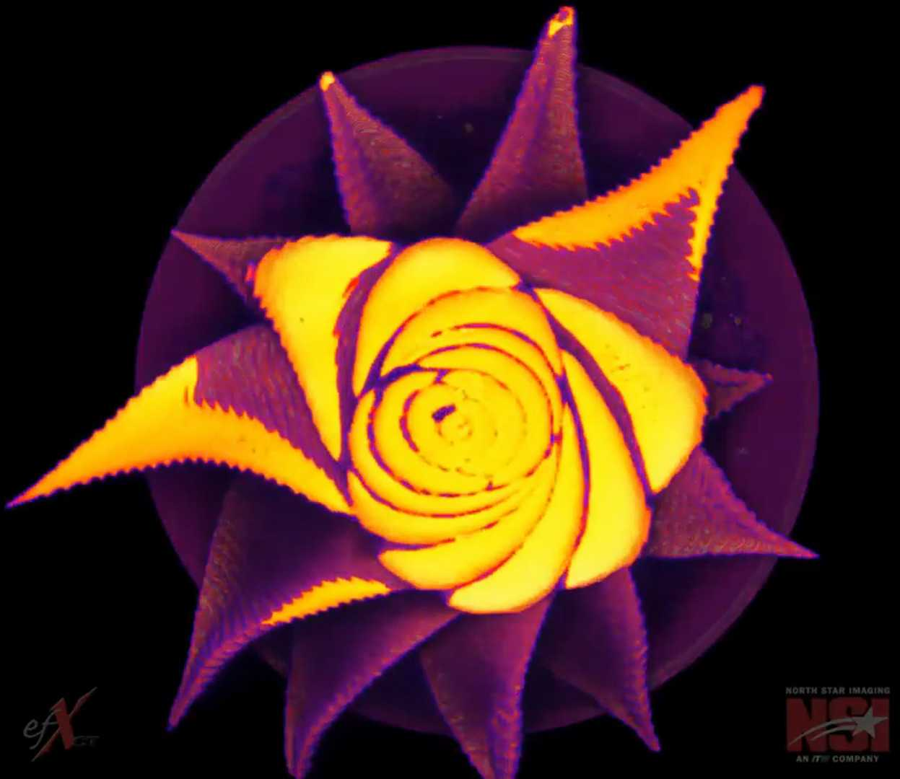

I am a PFFIE Postdoc Fellow based at the Division of Plant Science and Technology of the University of Missouri. I also have a minor dual appointment at the Department of Mathematics of Mizzou.
Education and Career
PFFIE Postdoctoral Fellow. 2023—present
University of Missouri—Columbia
Joint appointment between the Division of Plant Sciences & Technology (80%) and the Department of Mathematics (20%).
Part of the Preparing Future Faculty for Inclusive Excellence Postdoctoral Program (PFFIE)
Mentored mainly by David Mendoza-Cozatl (DPST).
PhD, Computational Mathematics, Science & Engineering. 2018—2023
Michigan State University
Thesis: Exploring the mathematical shape of plants
Advisors: Liz Munch (CMSE/Math) and Dan Chitwood (Horticulture/CMSE)
Slides of my dissertation defense can be found here.
Bs (Lic), Mathematics. 2013—2018
Universidad de Guanajuato
Thesis: Efficient object classification using the Euler characteristic
Advisor: Tony Rieser (CONACYT-CIMAT)
I received extensive support from the Centro de Investigación en Matemáticas (CIMAT) throughout my whole undegraduate career.
A copy of my thesis is available in the webpage of the TDA (Topological Data Analysis) research group at CIMAT, Guanajuato, Mexico.
Else, you can also find a copy here.
Mario Canul (CIMAT) provided valuable code and computational insight through the whole research.
Slides of my thesis defense can be found here.
Research interests
Topological data analysis; Euler characteristic; X-ray CT scanning; image processing; plant morphology; barley inflorescence; citrus hybridization
I also have experience working in coding projects with archaeologists, astronomers, and crossword enthusiasts.
See a better description of my projects here.
Peer-reviewed publications
- E.J. Amézquita, M.Y. Quigley, P.J. Brown, E. Munch, D.H. Chitwood (2024) Allometry and volumes in a nutshell: Analyzing walnut morphology using three-dimensional X-ray computed tomography. The Plant Phenome Journal, 7: e20095. DOI: 10.1002/ppj2.20095.
- E.J. Amézquita, F. Nasrin, K.M. Storey, M. Yoshizawa (2023) Genomics data analysis via spectral shape and topology. PLoS ONE 18(4): e0284820. DOI: 10.1371/journal.pone.0284820.
- R.A. Marks, E.J. Amézquita, S. Percival, A. Rougon-Cardoso, C. Chibici-Revneanu, S.M. Tebele, J.M. Farrant, R. VanBuren, D.H. Chitwood (2023) A critical analysis of plant science literature reveals ongoing inequities. PNAS 120(10): e2217564120. DOI: 10.1073/pnas.2217564120.
- E.J. Amézquita, M.Y. Quigley, T. Ophelders, D. Seymour, E. Munch, D.H. Chitwood (2023) The shape of aroma: measuring and modeling citrus oil gland distribution. Plants, People, Planet. 5(5): 698–711. DOI: 10.1002/ppp3.10333.
- R. VanBuren, A. Rougon-Cardoso, E.J. Amézquita, E. Coss-Navarrete, A. Espinosa-Jaime, O. Gonzalez-Iturbe, A. Luckie-Duque, E. Mendoza-Galindo, J. Pardo, G. Rodríguez-Guerrero, P. Rosiles-Loeza, M. Vásquez-Cruz, S. Fernandez-Valverde, T. Hernandez-Hernandez, S. Palande, D.H. Chitwood (2022) Plants and Python, Coding from Scratch in the Plant Sciences. The Plant Cell 34(7): e1. DOI: 10.1093/plcell/koac187.
- E.J. Amézquita, M.Y. Quigley, T. Ophelders, J.B. Landis, D. Koenig, E. Munch, D.H. Chitwood (2021) Measuring hidden phenotype: Quantifying the shape of barley seeds using the Euler Characteristic Transform. in Silico Plants 4(1) diab033. DOI: 10.1093/insilicoplants/diab033.
- E.J. Amézquita, M.Y. Quigley, T. Ophelders, E. Munch, D.H. Chitwood. (2020) The shape of things to come: Topological Data Analysis and biology, from molecules to organisms. Developmental Dynamics 249(7): 816–833. DOI: 10.1002/dvdy.175.
Preprints
- Z. Ji, E.J. Amézquita, L. Newton, D.H. Chitwood, A.M. Thompson (2024) From hand measurements to high throughput phenotyping: understanding maize canopy structure and predicting yield. Submitted.
- M. Bentelspacher, E.J. Amézquita, S. Adhikari, J. Barros, S.Y. Park (2024) The early dodder gets the host: Decoding the coiling patterns of Cuscuta campestris with automated image processing. DOI: 10.1101/2024.02.29.582789.
Other writing
- E.J. Amézquita (2022) Describing Demeter. Athens Science Observer. February 2022. Zine #3: Plant Phenotyping Edition. 8—11. Zine Link.
- E.J. Amézquita (2021) Sobre la fantástica teoría del origen de las desgracias. EPÉKTASI Revista de estudiantes de El Colegio de San Luis A.C 4(3). 73—75. DOI: 10.5281/zenodo.5847723.
- E.J. Amézquita (2018) Observe, adapt, repeat. OISS International Essay Contest. Office for International Students and Scholars. Michigan State University. 4—6. Mirror copy.
Talks and workshops delivered
- The early dodder gets the host
- MW ASPB 2024. American Society of Plant Biologists - Midwest Section. Purdue University, West Lafayette, Indiana. March 2024. Slides.
- The Wal(nu)tzing Nutcracker
- NAPPN 2024. North American Plant Phenotyping Network Annual Conference. Purude University, West Lafayette, Indiana. February 2024. Slides.
- IPG Plant Talks. Interdisciplinary Plant Group. University of Missouri, Columbia, Missouri. October 2023. Slides.
- Mapper and the topological shape of genomic analysis
- MU-GNU International Symposium in Plant Biotechnology. Bond Life Sciences Center. University of Missouri, Columbia, Missouri. October 2023. Slides.
- A primer on Topological Data Analysis
- Geometry and Topology Seminar. Department of Mathematics. University of Missouri, Columbia, Missouri. October 2023. Slides.
- Topology meets plant morphology
- Computer Science colloquium. Department of Computer Science. Saint Louis University, St. Louis, Missouri. April 2023. Slides.
- USTARS 2023. Underrepresented Students in Topology and Algebra Research Symposium. University of Washington, Seattle, Washington. March 2023. Slides.
- Plant Sciences seminar. Department of Botany and Plant Sciences. University of California, Riverside, California. January 2023. Slides.
- Plant Sciences seminar. Division of Plant Sciences. University of Missouri. Columbia, Missouri. November 2022. Slides.
- Stochastic Topology and applications seminar. Max Planck Institute for Mathematics in the Sciences (MiS). Virtual. November 2022. Slides.
- Multicellular dynamics in plant development seminar. Max Planck Institute for Plant Breeding Research (MPIPZ). Virtual. July 2022. Slides.
- OU Topology and Data Science Seminar. University of Oklahoma. Virtual. March 2022. Slides.
- The shape of aroma: measuring and describing the oil gland distribution on citrus
- XVII SEMBIOMAT. Seminario Internacional de Biomatemática. Sociedad Peruana de Matemática Aplicada y Computacional. Virtual. December 2023. Slides.
- 2023 NAPPN Annual Conference. North American Plant Phenotyping Network. St. Louis, Missouri. February 2023. Slides.
- JMM 2023. Joint Mathematics Meeting. Boston, Massachussetts. January 2023. Slides.
- CMSE Brown Bag Seminar. Michigan State University. East Lansing, Michigan. October 2022. Slides.
- 2022 AMS Spring Central. American Mathematical Society Sectional Meeting. Virtual. March 2022. Slides.
- 2022 GAC. Graduate Academic Conference. East Lansing, Michigan. February 2022. Slides.
- Describing
demeter: using the Topological Data Analysis to quantify the shape and biology - 2022 NAPPN Annual Conference. North American Plant Phenotyping Network. Athens, Georgia. February 2022. [Workshop material available here].
- GLBIO 2021. Great Lakes Bioinformatics Conference. May 2021. [Workshop material available here].
- 2021 AATRN Tutorial-a-thon. Applied Algebraic Topology Research Network. March 2021. [Recorded tutorial available here].
- 2021 NAPPN Annual Conference. North American Plant Phenotyping Network. February 2021. [Workshop material available here].
- Quantifying barley morphology using the Euler characteristic
- Geometry and Topology Seminar. Department of Mathematics. University of Missouri, Columbia, Missouri. November 2023. Slides.
- JMM 2022. Joint Mathematics Meeting. Virtual. April 2022. Slides.
- 2022 NAPPN Annual Conference. North American Plant Phenotyping Network. Athens, Georgia. February 2022. Slides.
- UFTDA2022. University of Florida Topological Data Analysis conference. Gainesville, Florida. January 2022. Slides.
- XVI SEMBIOMAT. Seminario Internacional de Biomatemática. Sociedad Peruana de Matemática Aplicada y Computacional. Virtual. December 2021. Slides.
- XIX PBMBC. 19th National Plant Biochemistry and Molecular Biology Congress. 12th Symposium Mexico/USA. 2nd ASPB Mexico Section Meeting. Universidad Nacional Autónoma de México (UNAM). Virtual. November 2021. Slides.
- MLCAS 2021. Third International Workshop on Machine Learning for Cyber-Agricultural Systems. University of Tokyo. Virtual. November 2021. Slides.
- 29th FWCG. Fall Workshop on Computational Geometry. Montana State University. Online. October 2021. Slides.
- 2nd WTMDA. Workshop on Topological Methods in Data Analysis. Heidelberg University. Online. October 2021. Slides.
- SIAM Annual Meeting 2021. Society for Industrial and Applied Mathematics. Online. July 2021. Slides.
- ISCB Posterpalooza. (Organizers changed the format to short, recorded presentations instead). International Society for Computational Biology. March 2021. Recorded presentation.
- Seminario Junior de Estudiantes. Departamento de Matemáticas. University de Guanajuato. Virtual. Marzo 2021. Slides.
- 13th Annual Graduate Academic Conference. Council Of Graduate Students. Michigan State University Online due to covid-19 pandemic. February 2021. Slides.
- FEST 2020. December 2020. Slides [in Spanish].
- TDA Workshop @ NeurIPS 2020. Neural Information Processing Systems. Online. December 2020. Slides.
- Summer Math Academy. Math Department. University of Toronto. July 2020. Slides.
- YRF @ SoCG. Young Researcher Forum @ CG Week, Symposium on Computational Geometry. June 2020. Slides.
- Seminario AMEs. Instituto Politécnico Nacional. June 2020. Slides (in Spanish).
- TDA Seminar. Michigan State University. March 2020.
- Analyzing maize leaf angles and modeling leaf curvature
- 2021 NAPPN [North American Plant Phenotyping Network] Annual Conference. Online due to covid-19 pandemic. February 2021.
- Efficient object classification using the Euler characteristic: bridging mathematics and archaeology
- 16th School on Probability and Statistics. CIMAT. April 2018. Slides..
- 4th Young Researchers Interinstitutional Congress. UJAT. Nov. 2017.
- Applied Mathematics Graduate Students Seminar. CIMAT. Sept. 2017.
- 5th Young Researchers Meeting. University of Guanajuato. Sept. 2017. Slides..
- 2nd Colloquium on Technological Development for Cultural Heritage. CIMAT. Aug. 2017. Slides..
- Undergraduate Students Seminar. Math Department, University of Guanajuato. Aug. 2017. Slides..
- Topological Data Analysis Seminar. CIMAT. May 2017. Slides..
- 2nd National Innovation Congress. University of Guanajuato. Oct. 2016.
Posters presented
- The early dodder gets the host
- Show Me Research Week 2024. Research, Innovation & Impact &endash; Administrative Office. University of Missouri, Columbia, Missouri. April 2024. HTML. PDF.
- MW ASPB 2024. American Society of Plant Biologists - Midwest Section. Purdue University, West Lafayette, Indiana. March 2024. HTML. PDF.
- MUPRS 2024. MU Plant Research Symposium. University of Missouri, Columbia, Missouri. March 2024. HTML. PDF.
- The Wal(nu)tzing Nutcracker
- 2024 NAPPN Annual Conference. North American Plant Phenotyping Network. Purdue University, West Lafayette, Indiana. February 2024. HTML. PDF.
- MU-GNU International Symposium in Plant Biotechnology. Bond Life Sciences Center. University of Missouri, Columbia, Missouri. October 2023. HTML. PDF.
- CAFNR Research Symposium. College of Agriculture, Food, and Natural Resources. University of Missouri, Columbia, Missouri. October 2023. HTML. PDF.
- The shape of aroma: measuring and describing the oil gland distribution on citrus
- 2022 OSU PSS. The Ohio State University Plant Sciences Sympossium. Online. April 2022. [Animated HTML poster].
- Quantifying barley morphology using the Euler characteristic
- 2nd DISC. Data Science Student Conference. CMSE, Michigan State University. East Lansing, Michigan. November 2022. [Static HTML poster]. [PDF].
- IPPS 2022. International Plant Phenotyping Symposium. Wageningen, The Netherlands. September 2022. [Static HTML poster]. [PDF].
- 1st AATRN Poster Session. Applied Algebraic Topology Research Network. Virtual. October 2021. [Animated HTML poster]. [Accompanying slides]. [Promotional video].
- GTDAML 2021. Second Graduate Student Conference: Geometry and Topology meet Data Analysis and Machine Learning. Virtual. August 2021. [Animated HTML poster]. [Accompanying slides]. [Promotional video].
- ISMB/ECCB 2021. Intelligent Systems for Molecular Biology/European Conference on Computational Biology. Virtual. July 2021. [Animated HTML poster]. [Accompanying slides].
- Topological Data Analysis workshop. IMSI. Insititute for Mathematical and Statistical Innovation. Virtual. April 2021. [Animated HTML poster].
- 2021 NAPPN Annual Conference. North American Plant Phenotyping Network. February 2021. [Animated HTML poster].
- 13th Annual Graduate Academic Conference. Council Of Graduate Students. Michigan State University. February 2021. [Animated HTML poster].
- TDA Workshop @ NeurIPS 2020. Neural Information Processing Systems. Online. December 2020. [Animated HTML poster].
- SMB 2020 Annual Meeting. Society of Mathematical Biology. Online. August 2020. [Animated HTML poster].
ATMCS. Algebraic Topology: Methods, Computation, and Science. Ohio State University. June 2020.- Efficient object classification using the Euler characteristic: bridging mathematics and archaeology
- Interfacing Computation and Plant Science Symposium. Michigan State University Aug 2018. Poster..
- 47th Annual John H. Barrett Memorial Lectures. Math Department, University of Tennessee. May 2017. Poster.
- CIMAT-UA Workshop. Math Department, University of Arizona. March 2017. Poster.
- 3rd School on Topological Data Analysis and Stochastic Topology. CINVESTAV. Jan 2017. Poster.
Workshops and hackathons attended
- Graduate Wellness Ambassador Program. Geared towards International Grad Students. The Grad School. Michigan State University, East Lansing, Michigan. Spring 2023.
- Datathon4Jutice. QSIDE. Institute for Quantitative Study of Inclusion, Diversity, and Equity. Virtual. Oct 2021.
- NatSci Cultural Competency. DEI Office for the College of Natural Science Workshop Series. Michigan State University. East Lansing, Michigan. Fall 2021.
- Immersive Visualization Institute (IVI). Michigan State University. East Lansing, Michigan. June 2021.
- MSU Dialogues. Race. Module I. Office for Institutional Diversity and Inclusion. Michigan State University. Virtual. Spring 2021.
- 2nd Annual ComSciCon—Michigan Chapter. Michigan State University. East Lansing, Michigan. Aug 2019.
- AMMTT. Applied Mathematical Modeling with Topological Techniques. ICERM. Providence, Rhode Island. August 2019.
Teaching experience
As a Teaching Assistant
- SGI 2023. Summer Geometry Initiative. Massachusetts Institute of Technology. August 2023. Virtual
- SGI 2022. Summer Geometry Initiative. Massachusetts Institute of Technology. August 2022. Virtual
- SGI 2021. Summer Geometry Institute. Massachusetts Institute of Technology. August 2021. Virtual
- Code In Place. Stanford University. April-May 2021. Virtual
- CMSE 201: Intro to Computational Modelling and Data Analysis. Michigan State University. Fall 2019
- Precalculus and analytic geometry. Universidad de Guanajuato. Spring 2018
- Topology I (Intro to point-set topology). Universidad de Guanajuato. Fall 2017
- Introduction to C++ and data structures. CIMAT. Summer 2017. Virtual.
- Introduction to probability. Universidad de Guanajuato. Fall 2016
As a Mentor for Undergrads
- BIPS Mentor. Bioinformatics in Plant Sciences. Weekly meetings. University of Missouri. Spring 2024 - present.
- ACRES 2022 Advanced Computational Research Experience. Michigan State University. Summer 2022.
- 14th Calculus Problem-solving Workshop. CIMAT. Summer 2017
Service
Part of the organizing committee
- Early Career Phenomics Focus Group. North American Plant Phenotyping Network. Summer 2022–present
- CMSE Brown Bag Seminar. Michigan State University. September 2022–present.
- 2nd CMSE DISC. Data Science Student Conference. Michigan State University. November 2022
- Plant Breeding, Genetics, and Biotechnology (PBGB) symposium. Michigan State University. Dec 2019
- CIMAT Film Club. CIMAT. August 2014—Dec 2017.
- Junior Junior Math Seminar of High School Students. Universidad de Guanajuato. Jan 2015–June 2016.
As a student representative
- Part of the CMSE Chair Search Committee. January 2022—present.
- President for the CMSE Graduate Student Organization (GSO). September 2021 — September 2022.
- COGS liason for La Comunidad Latinoamericana Council of Graduate Students. Michigan State University. May 2021—present.
- Student representative for the College of Natural and Exact Sciences Council. Universidad de Guanajuato. May 2016—Dec 2017.
Other professional service
- Reviewer for journal submissions: PeerJ, Scientific Reports, Frontiers in Plant Science, Journal of Computational Geometry, Transactions on Pattern Analysis and Machine Intelligence
- Reviewer for conference submissions: SoCG, MAPI (Colombia), TAGML@ICLR, TDA@Neurips, GTRL@ICLR.
- Poster Judge for Undegraduate Research Experience Conference at the University of Missouri, and at Michigan State University.
- Webmaster of the SMB Subgroup: Methods for Biological Modeling webpage. January 2021—January 2022.
- Tutor of Guatemalan Math Olympiad Team. Made necessary arrangements so Guatemala could participate in the 15th Central American and Caribbean Math Olympiad at Managua, Nicaragua. Guatemala. Jan 2013—July 2013.
Outreach
Panel organizer and moderator
- Mental Health in Mathematics and Computer Science. Part of the SGI 2023. Summer Geometry Initiative. Massachusetts Institute of Technology. July 2023. Virtual. The details and transcription summary of the panel discussion can be read here.
- Mental Health in Mathematics and Computer Science. Part of the SGI 2022. Summer Geometry Initiative. Massachusetts Institute of Technology. August 2022. Virtual. The details and transcription summary of the panel discussion can be read here.
Panel participant
- Feria de Posgrados. Organized by the Sociedad de Estudiantes del Departamento de Matemáticas. Universidad de Guanajuato. Febrero 2024. Virtual.
- UAB Grad School Panel. Organized by the University Activities Board. Michigan State University, East Lansing, Michigan. February 2023.
- Webinar de Solicitudes al Doctorado en Estados Unidos. Organized by the Coloquio de Exestudiantes CIMAT/DEMAT. August 2022. Virtual.
Coding workshops for a non-coding audience
- Wrangling and Presenting Data with Pandas and Seaborn in Python. SSDA Workshop. Social Science Data Analytics Initiative. Michigan State University. August 2020. Virtual. Workshop material.
- Narrating our data with RMarkdown. SSDA Workshop. Social Science Data Analytics Initiative. Michigan State University. May 2020. Slides. Workshop material.
Popular science talks
- Un matemático y un botánico van por una limonada. ¡Science on Wheels en Español!. En colaboración con SACNAS Mizzou. Columbia, Missouri. November 2023. Slides.
- If life gives you lemons, analyze the shape of their aroma. Science on Tap. Columbia, Missouri. July 2023. Slides.
- A topologist and a plant biologist go for a newly shaped beer. Hispanics in STEM celebration. Women and Minorities in Physical Sciences (WaMPS). Michigan State University. East Lansing, Michigan. October 2021. Slides.
- La Maldición de la Dimensión y el Aprendizaje de Máquina. Ciencia es Cultura contributed lectures. Dirección de Extensión Cultural. Universidad de Guanajuato. May 2018. Slides.
- Un matemático y un psicólogo de paseo por Hanoi. Ciencia es Cultura contributed lectures. Dirección de Extensión Cultural. Universidad de Guanajuato. Nov 2017. Slides.
- Infinitos grandes e infinitos pequeños: la paradoja del Hotel de Hilbert. Ciencia es Cultura contributed lectures. Dirección de Extensión Cultural. Universidad de Guanajuato. March 2017. Slides.
Other outreach
- STEM Professional Penpal. Letters to a Pre-Scientist. Exchanged mail during Fall 2023-Spring 2024.
Awards and Scholarships
- Travel Grant @ MW-ASPB 2024. Hotel expenses covered. American Society for Plant Biologists - Midwest Section. Purdue University. West Lafayette, Indiana. March 2024.
- Best Flash Talk @ NAPPN 2024. 52 3-minute long flash-talks at the event. North American Plant Phenotyping Network Annual Conference. Purdue University. West Lafayette, Indiana. February 2024.
- Distinguished Graduate Student @ USTARS 2023. Selected as the Topology area plenary speaker for the Underrepresented Students in Topology and Algebra Research Symposium. Full travel expenses. University of Washington, Seattle, Washinton. March 2023.
- Best ICER Poster @ 2nd DISC. 20 posters presented at the event. Data Science Student Conference. Institute for Cyber-Enabled Research & CMSE. Michigan State University. East Lansing, Michigan. November 2022.
- 3rd Best Poster @ IPPS 2022. 173 posters presented at the event. International Plant Phenotyping Symposium. Wageningen, The Netherlands. September 2022.
- Travel Grant @ IPPS 2022. All travel expenses fully covered. International Plant Phenotyping Symposium. Wageningen, The Netherlands. September 2022.
- Fitch H. Beach Award. 2nd place. Awarded by the College of Engineering to the most outstanding graduate researchers within the College. Michigan State University, East Lansing, Michigan. April 2022.
- Best Lightning Talk @ IMPACTS Symposium. 7 flash talks presented at the event. Annual IMPACTS Symposium. Michigan State University, East Lansing, Michigan. April 2022.
- Travel Grant @ NAPPN 2022. All travel expenses fully covered. North American Plant Phenotyping Annual Conference. Athens, Georgia. February 2022.
- Dr. Federico Sánchez Flash Talks Award. Among the 10% of best flash presentations. XIX National Plant Biochemistry and Molecular Biology Congress. XII Syposium Mexico-USA / 2nd ASPB Mexico Section. Virtual. November 2021.
- 2nd Best Grad Student Flash Talk @ PBGB Symposium. 7 flash talks presented at the event. Plant Breeding, Genetics, and Biotechnology Symposium. Corteva Plant Science Symposia Series. Michigan State University. East Lansing, Michigan. December 2019.
- Travel Grant @ AMMTT. Hotel expenses covered. Applied Mathematical Modeling with Topological Techniques. ICERM. Providence, Rhode Island. August 2019.
- IMPACTS (Integrated training Model in Plant And Compu-Tational Sciences) fellowship. Fellowship awarded by Michigan State University and NSF Research Traineeship Program. Spring 2019.
- Sotero Prieto Award. Awarded by the Mexican Mathematical Society (SMM) to the best undergrad math theses produced in Mexico during the 2017-18 academic year. Oct 2018.
- 3rd Place. Francisco Aranda Ordaz Award Awarded by the Mexican Statistical Association (AME)to the best undergrad statistic theses produced in Mexico during the 2016-18 academic years. Oct 2018.
- Raymond P. and Marie M. Ginther Graduate Fellowship. Fellowship awarded by the Computational Mathematics, Science and Engineering Department to outstanding incoming graduate students. March 2018
- 3rd Place. Best Undergraduate Mathematics, Physics and Earth Sciences Innovation Project. 4th Young Researchers Interinstitutional Congress [Nationwide event]. Nov 2017.
- 1st Place. Best Undergraduate Engineering Innovation Project. 5th Young Researchers Meeting [Guanajuato statewide event]. Sept 2017.
- CIMAT Academic Excellence Scholarship for Undergraduate Studies. Merit-based scholarship to support living costs. Aug 2013 - Dec 2017.
- Bronze medal. 12th Central American and Caribbean Math Olympiad. May 2012.
In the news
- Guillaume Tena «Biases in plant sciences». Nature Plants. April 13, 2023. URL.
- Mary Williams «New Teaching Tool, “Plants and Python: a series of lessons in coding, plant biology, computation, and bioinformatics” ». The Plant Cell: News. July 26, 2022. URL.
- Rachel Shekar (translated by E.J. Amézquita) «Midiendo el fenotipo oculto con técnicas matemáticas novedosas». Botany One. January 6, 2022. URL.
- Rachel Shekar «Measuring the hidden phenotype using novel mathematical techniques». Botany One. January 6, 2022. URL.
- Journeys of Scientists Podcast. WaMPS. Women and Minorities in the Physical Sciences. January 12, 2021. Podcast.
- «Using Topology & Morphology to Quantify & Contextualize 3D Plant Structures». ICER Student Highlights. Michigan State University. Last accessed March 1, 2020. URL.
Events attended
- I Congreso Iberoamericano de Morfometría Geométrica. Universidad Católica del Maule. Virtual. May 2020.
- Plant Breeding, Genetics, and Biotechnology (PBGB) symposium. Michigan State University, East Lansing, Michigan. Dec 2019
- Union College Mathematics Conference. Schenectady, New York. Sept 2019.
- Interfacing Computation and Plant Science Symposium. Michigan State University, East Lansing, Michigan. Aug 2018.
- 28th Annual Conference of the International Environmetrics Society (TIES). CIMAT, Guanajuato, Guanajuato. July 2018.
- 2nd Colloquium on Technological Development for Cultural Heritage. CIMAT, Guanajuato, Guanajuato. August 2017.
- 4th School on Topological Data Analysis and Stochastic Topology. CCM—UNAM, Morelia, Michoacán. July 2017.
- 47th Annual John H. Barrett Memorial Lectures. Department of Mathematics, University of Tennessee, Knoxville, Tennessee. May 2017.
- CIMAT-UA Workshop. Department of Mathematics, University of Arizona, Tucson, Arizona. March 2017.
- 3rd School on Topological Data Analysis and Stochastic Topology. Centro ABACUS, CINVESTAV, Ocoyoac, Estado de México. January 2017
- Latin American and Caribbean Mathematics School (EMALCA). Casa Matemática Oaxaca, Oaxaca, Oaxaca. June 2016.
- 11th Workshop on Calculus Problems. CIMAT, Guanajuato, Guanajuato. July 2014
Skills
- Spoken: Spanish (native), English (near native), French (elementary)
- Programming: R, python, C/C++
- Technology: bash, LaTeX, RMarkdown, xaringan, jupyter, CSS, HTML, MPI

Me back in Sept 2021. At Williamstown, MI. You can tell I am not exactly a fan of selfies.
My CV:
——————————
Jump to:

X-Ray CT scan of a barley panicle
{kind=link}
Observing apple vasculature
{kind=link}
Couple of corn ears

Agave crossed with Manfreda

A cavernous bell pepper!

Quoting Dan C: "Everytime you see a cactus, you should feel awe."

Spiraling with haworthia